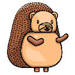

🏷 Slack Emojis for Meet
Bring your workspace's custom Slack emojis into Google Meet chat.
1
Connect your Slack workspace to import its custom emojis.
2
Open Google Meet and start typing :emoji_name: in chat.
✓ Connected to
You're all set — open Google Meet and type :emoji_name: in chat.
Open Google Meet